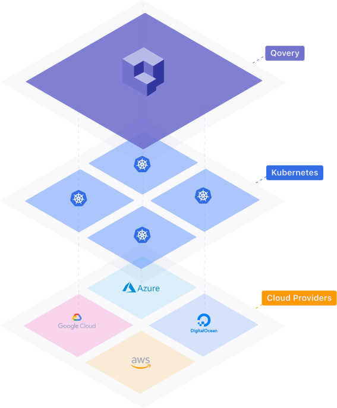

Qovery Engine gitlab stars
Abstraction layer to deploy microservices applications on any Cloud provider.
Qovery Engine is an open-source abstraction layer product that turns easy apps deployment on AWS, GCP, Azure and others Cloud providers.
